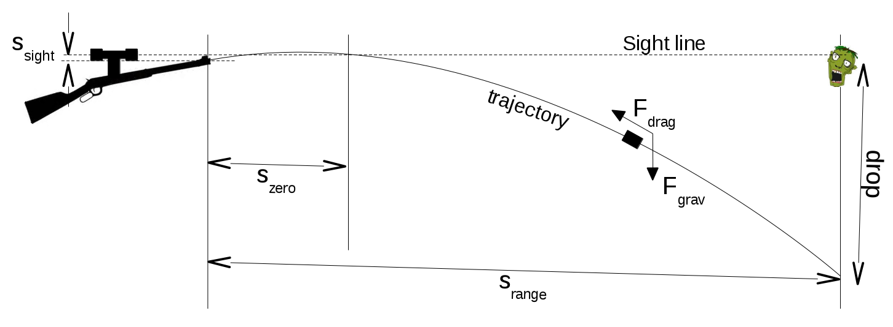
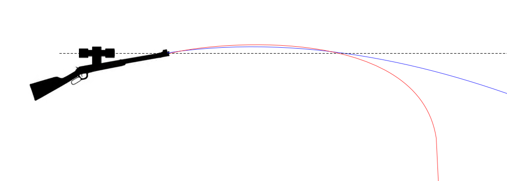
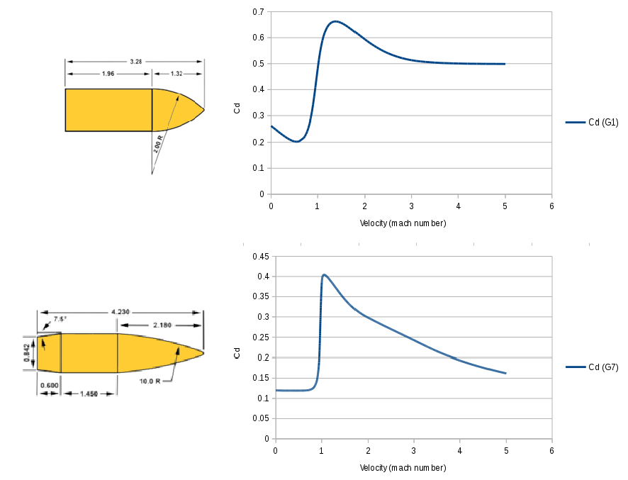
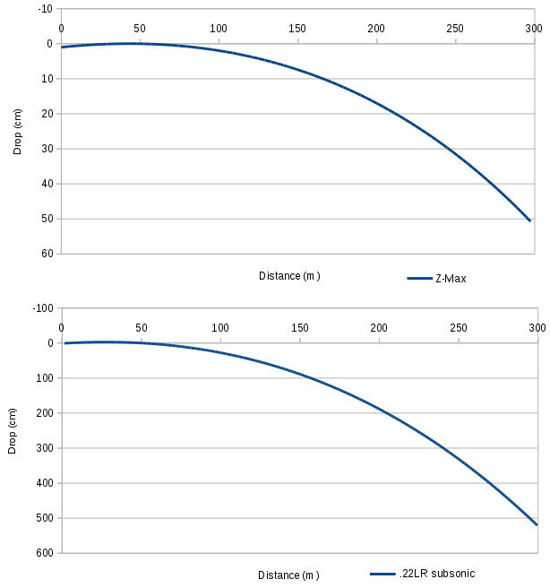
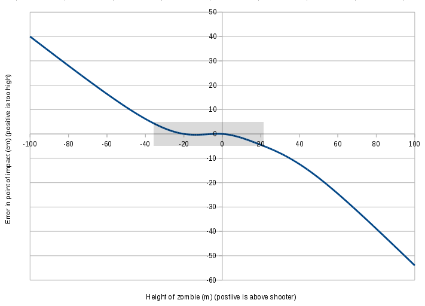

Night of the living drag coefficients -- ballistics applied to zombie control
 The first article in my series on mathematics applied to the zombie
apocalyze, night of the living differential equations,
dealt with modelling the population dynamics of the human-vs-zombie
struggle. This article deals with a more prosaic matter: how to ensure
that you use your limited supply of ammunition wisely, in order to
eradicate as many zombies as possible.
You and your small band of battle-weary survivors of the zombie
apocalyse are trapped in a
burned-out building, and need to get to your vehicle which is parked
(say) 300 metres away. Unfortunately, said vehicle is surrounded by a
ravening zombie horde, attracted by the smell of the bratwuest
sausage that you left mouldering on the back seat (could happen.)
You have an old rifle and a small supply of
Hornady Zombie Max
ammunition, and
hope to shoot the zombies before trying to get away. The rifle's sights
are perfectly set for a range of 50 metres -- you know this because
you've been using it to harvest the feral cats and dogs that now
form your staple diet. You know, however, that to dispose of a zombie
you must destroy its brain, which necessitates a shot right to the
middle of its mouldering forehead.
You're aware, of course, that your rifle does not shoot in a straight
line. If it's correctly sighted for 50m, the bullet will drop
considerably over the next 250m. But how far will it drop? You
can't afford to waste even a single shot, so should you aim two inches
high? Or a yard? With only a computer, the manufacturer's technical
data sheet for your ammunition, and a textbook on fluid dynamics, you
set to work...
The first article in my series on mathematics applied to the zombie
apocalyze, night of the living differential equations,
dealt with modelling the population dynamics of the human-vs-zombie
struggle. This article deals with a more prosaic matter: how to ensure
that you use your limited supply of ammunition wisely, in order to
eradicate as many zombies as possible.
You and your small band of battle-weary survivors of the zombie
apocalyse are trapped in a
burned-out building, and need to get to your vehicle which is parked
(say) 300 metres away. Unfortunately, said vehicle is surrounded by a
ravening zombie horde, attracted by the smell of the bratwuest
sausage that you left mouldering on the back seat (could happen.)
You have an old rifle and a small supply of
Hornady Zombie Max
ammunition, and
hope to shoot the zombies before trying to get away. The rifle's sights
are perfectly set for a range of 50 metres -- you know this because
you've been using it to harvest the feral cats and dogs that now
form your staple diet. You know, however, that to dispose of a zombie
you must destroy its brain, which necessitates a shot right to the
middle of its mouldering forehead.
You're aware, of course, that your rifle does not shoot in a straight
line. If it's correctly sighted for 50m, the bullet will drop
considerably over the next 250m. But how far will it drop? You
can't afford to waste even a single shot, so should you aim two inches
high? Or a yard? With only a computer, the manufacturer's technical
data sheet for your ammunition, and a textbook on fluid dynamics, you
set to work...
The model
For the sake of simplicity, I will assume that you will be battling zombies on a windless day with no precipitation. The problem is thus two-dimensional, as there is nothing to deflect the bullet in the left-right direction. Moreover, you and you targets are at the same height above ground (we will consider situations where that is not the case later.) The diagram below shows the important features of the model.

The problem: where to point your gun to achieve a perfect hit on the
zombie's brainbox?
The physics of flying lumps
If you studied physics at school then most likely you were taught that objects thrown into the air (bullets, baseballs, hats, pizza) follow a parabolic path, that is, one described by a quadratic function. The object has a certain constant horizontal momentum imparted by the original throw, but its vertical momentum will eventually be overcome by the force of gravity. The mathematics of this situation are pretty straightfoward, and it's possible to write down a couple of formulae that describe the horizontal and vertical positions of the flying object. To be fair, at ranges of up to 100m or so, the flight of a rifle bullet follows this simple model fairly well. Unfortunately, this model neglects air resistance (drag) and so, at longer distances, it is hopelessly inaccurate. Allowing for drag, we see that the horizontal momentum is eventually lost, and the projectile will enter what is effectively free fall. A modern rifle projectile might cover several kilometres before it loses all its forward momentum, but the trajectory will depart from the ideal model a long time before that happens (see diagram below.)

Ideal parabolic path (blue line), compared with a more realistic
drag-retarded trajectory (red line). Eventually, the bullet will
essentially be in free fall, when drag has overcome all its
horizontal momentum.
A simple drag model
We'll begin the analysis by pretending that the drag force is proportional to velocity squared, as is the case for many fluid dynamics problems. The bullet leaves the muzzle with a known velocity vmuzzle (which will depend on the ammunition and the barrel construction; the ammunition manufacturer should be able to give us a reasonably reliable average value). We can resolve this velocity into horizontal components vx and vy -- the horizontal component will be affected by drag only; the vertical by drag and the effect of gravity. We need to decide which will be the positive and which the negative direction of v; for no particular reason in what follows I will assume that v is positive downwards and to the right (i.e., in reading direction). From simple mechanics, considering a small increment in time δt
δvx = ax δt,
δvy = ay δt
δsx = vx δt,
δsy = vy δt
ay = -Fy / m + g where F is the drag force operating on the bullet and g, as ever, is the accelaration due to gravity. The negative signs in these expressions reflect the fact that the force of drag will be opposite to the direction of the bullet's velocity; g is a positive term because it always acts downwards, which is the positive direction of velocity in this formulation. The textbook formulation of the drag force F is F = ρ v2 cd A / 2, where cd is a (sort of) constant, the coefficient of drag, and ρ is the air density. A, which has units of area, is typically called the 'reference area' or 'effective area'. The idea is that the parameter cd models the shape of the moving object, and A its size. In practice A is not usually the cross-sectional area of the moving object, because different objects can have identical areas but very different drag forces. This means that, in reality, the meanings of cd and A vary according to the discipline of study. How these terms are interpreted in ballistics will be discussed below. For now, however, we have an expression for F that is dependent, for a particular projectile, on v2 and some constants. It would be nice to be able to arrange the above expressions into a pair of second-order differential equations for sx and sy in terms of t and solve them. However these equations will be non-linear because of the dependence of F on v2 and, if there is an analytic solution, I don't know what it is. It isn't really worth looking for one, because when we realize that the drag force is not, in reality, proportional to v2, but varies in a way that has to be determined experimentally, it is clear that a numerical solution is required. It's straightforward enough to solve the problem numerically, by starting with initial values of s and v, taking a small value of δt (10 milliseconds seems to work quite nicely), and evaluating F, and thus a, δv, and δs at that time. Then we increment the s and v, and repeat. Since we have a known distance that the projectile must cover, we just iterate until sx reaches that distance, and read off the corresponding sy, which is the drop of the bullet at the target distance. For completeness, we need to adjust the calculated drop by ssight, the distance that the muzzle is below the sight. In all the calculations in this article I have assumed that this distance is 1cm, although it doesn't make a huge difference to the final results.
Drag forces in ballistics
In ballistics, the drag force is not proportional the square of the bullet velocity. It's particularly troublesome at velocities around mach-1, the speed of sound. As the bullet slows from just above supersonic to just below subsonic speeds, there is a reduction by almost a half in the drag force. Since many bullets will experience this transition at some point along their trajectories, this effect cannot be ignored. In ballistics it is common to formulate the drag equation like this: F = ρ v2 cd A i / 2. Here the reference area A might just as well be taken to be the cross-section area of the bullet, because at least we can easily measure it. Of course, different formulations of A will lead to different calculations of drag force unless we adjust the drag coefficient Cd accordingly; but since the drag coefficient is -- on the whole -- something that has to be determined experimentally. its actual value is irrelevant. In this formulation, Cd is the drag coefficient for a "standard bullet," whose properties I will describe later. The term i -- not to be confused with imaginary numbers -- is a form factor. This is simply a multiplier that adjusts the drag that would be observed for the standard bullet by an amount that compensates for the fact the projectile is not a standard bullet. It turns out that, for a specific bullet shape, the drag force is broadly proportional to the mass of the bullet, and inversely proportional to the cross-section area. So, to a reasonable approximation, i = (m/d2) / (mstd/dstd2) where m and mstd are the masses of the real projectile and the standard bullet, and d and dstd are their diameters. Presumably to save time when computations of this sort had to be done by hand, the standard bullet was defined to be an object of mass one pound, and diameter one inch. The term (mstd/dstd2) is therefore numerically equal to 1.0, and is frequently omitted in the analysis. Unfortunately, although this term has no numerical significance, it has units of pounds/square inch, and this means that great care has to be taken to insert the correct conversion factors when manipulating expressions. This formula for i was derived in the 19th century, when it was originally assumed that the specific shape of the bullet would be unimportant. All that mattered, it was assumed, was the mass and the area exposed to the air in the direction of flight. Later it was found that, in fact, differently shaped bullets of the same mass and calibre (diamter) could have very different drag properties, and so an additional term, the ballistic coefficient was introduced to allow for shape-related drag variation. So the form factor was re-written: i = (m/d2) / (mstd/dstd2) / BC. Both form factor and BC are to some extent arbitrary; if they are defined differently then the differences can, up to a point, be absorbed into the values determined for Cd. However, BC is the figure that ammunition vendors have largely chosen to measure and publicise for their products. BC is probably more useful for end users, because it describes an actual bullet with a specific size and weight. Form factor is an abstract measurement dependent on projectile shape alone. Incidentally, there is a certain amount of debate about whether the term (mstd/dstd2) is part of the ballistic coefficient, part of the form factor, or part of the drag equation itself. Because it has numerical value 1.0 in usual practice, it makes no difference to the results. However, because of this uncertainty, both BC and form factor potentially have units (of pounds per square inch), although the units are rarely written. Now we can write the drag equation like this: F = ρ v2 cd A(m/d2) / (mstd/dstd2) / BC / 2. Note that A here is in SI units if F is, but m and d are in pounds and inches, because that is how the reference bullet is specified. So, although area = πd2/4 generally, in this case A = π(d/ki)2/4 where ki is the number of inches per metre. In the expression for F the d2 terms cancel (apart from the conversion constant just mentioned) and, since there are no further unit conversions to trouble us, we can omit the (mstd/dstd2) term from the drag equation and rewrite it like this: F = ρ v2 (π / 4ki) cd m / BC / 2, being careful to remember that the mass m is in pounds, even when all other quantities are expressed in SI units. It is interesting that, apart from the contribution it makes to mass, the physical size of the bullet does not feature in this expression. This leads to the somewhat surprising result that a bullet made of lead, and a much larger bullet made of, say, marshmallow, would appear to have identical ballistic properties (so long as they have the same shape). However, appealing as the prospect of marshmallow bullets is, it is unlikely that that would have comparable Cd to metal ones.The G tables
We don't yet have enough information to model the flight of a real bullet because, although vendors publish values of BC, that figure along does not capture the variation in drag with velocity. Remember that, for bullets, drag is not proportional to v2. We could capture the relationship between drag and v2 by using a value of BC that is velocity-dependent, rather than constant, and some models do exactly that. In practice, however, most ammunition vendors quote a fixed BC relative to some standard aerodynamic model. It turns out that, while the relationship between drag and v2 does depend on the bullet, that dependence is very similar for whole families of bullet shapes. In the mid-20th century various organizations did extensive research into the aerodynamics of various bullet shapes, and this led to the so-called G tables or G models. Each table presents the coefficient of drag with varying velocity for a particular standard projectile. For modern ammunition, the G1 and G7 tables are most relevant, with G1 being used more commonly. For reference, the G1 and G7 standard projectiles are shown below.

The G1 and G7 standard projectiles, along with their coefficients of
drag for varying velocity. Dimensions are expressed as multiples of the
diameter. Note the rapid change of drag coefficient around mach-1 for
both bullet shapes.
Application: comparing ammunition
The computation method was described earlier; all we need do now is to incorporate the more sophisticated drag model into the math. The Download section of this article provides a simple Java program that will perform the necessary trajectory calculation, given the relevant physical and ballistic properties. To illustrate the importance of proper ballistic modelling, I will compare two brands of rifle ammunition at more-or-less the opposite ends of the performance spectrum: Hornady Zombie Max in 0.223 calibre Winchester format, and a standard 0.22 calibre 'long rifle' subsonic round of the kind used all over the world for target shooting practice. The Hornady round fires a 55-grain (3.6gm) bullet with a BC of 0.225 at a muzzle velocity of 3240 feet per second (fps). The standard 0.22 subsonic fires a round-nosed, 38-grain (2.5gm) bullet at just under the speed of sound, about 1000fps. These subsonic bullets typically have a BC of around 0.125. The higher BC of the Hornady bullet reflects its more aerodynamic shape. We might expect that the subsonic bullet will take about three times as long to reach the target as the Hornday Z-Max, since it is ejected from the barrel at only one third the speed. If this is true, gravity will have about three times as long to work on the bullet before impact. Looking at the plots below, we can see that the subsonic 0.22 bullet has a drop of over 5 metres at 300m range. That's nearly ten times as much as the Z-Max bullet, which itself drops a not-inconsiderable 50cm. What this means is that even with top-quality ammunition, you would still have to aim 50cm above the zombie's head to be sure of dispatching it. Fortunately this is within the range of adjustment of most rifle sights, so it should not be an impossible shot.

Drop of the bullet from the muzzle for two different kinds of
rifle ammunition: Hornady Zombie Max in 0.223 Winchester format,
and a round-nose 0.22 subsonic target round
Application: dealing with elevation
One common problem in ballistics lies in dealing with situations where the target is above or below the firing point. Suppose for example that the zombies, as well as being 300m away, are on top of a bridge 50m above you. Or perhaps they are at the bottom a hill, shambling towards your position. The usual finding in situations like this, if you adjust your rifle so that the point of impact would be correct for the actual distance to the target, is that the impact is above the target, whether the target is above or below the firing point. The actual distance to the target is further than the horizontal distance whether the target is higher or lower (this is just an application of Pythagoras' theorem), and this might give the impression that the bullet would fall further, and that the point of impact would to too low in both cases. However, in practical shooting situations the bullet strikes high because gravity has the greatest effect on a projectile that is travelling perfectly horizontally. Consider a bullet that is travelling upwards at an angle of, say, 45 degrees. Gravity will make the bullet drop, of course, but it has to overcome the initial upwards component of motion of the bullet. The overall drop is therefore reduced. If the target is below the firing point, gravity will tend to speed the bullet on its way to the target. There is therefore less time for gravity to act on the bullet and, again, it impacts high. The effects of upwards elevation and downwards elevation are not symmetrical -- in most cases the tendency to impact high is less pronounced for a low target than a high one. A common way of compensating for a tendency to shoot high, which has been known for at least a hundred years, is to adjust the rifle sight for the correct horizontal distance to the target. So if, for example, the zombies are on top of a tall building and you are at the bottom, you should adjust the rifle sight for the base of the building, not the zombies on top. The effect of sighting this way is to lower the trajectory of the bullet whether shooting upwards or downwards, but how effective is it? The effect of sighting short will tend to turn an error in shooting high into an error in shooting low but, with luck, there will be a region of elevation where these two effects tend to cancel. We will investigate this elevation compensation approach using the Hornady Zombie Max projectile described in the previous section. We work out the angle of elevation of the barrel (departure angle) to give a zero point at 300m -- the horizontal distance to the target -- and then add or substract enough angle to raise the sight point to the target elevation. If the target is elevated by 50m, for example, we must raise the muzzle by 9.46 degrees [=atan(50/300)] to sight on the zombie on the top of the building. Then we can use the procedure described previously to compute the trajectory iteratively, and work out the height of the bullet at 300m horizontal distance. The graph below shows the effect of sighting this way. Note that there is a region of relatively small impact error for a target between about 20m above and 30m below the shooting position.

Error in height of point of impact with targets at various elevations
with respect to the shooter. Positive elevation means that the zombie
is above the shooter (aargh!), negative below. Given that a zombie brain
is about 10cm in diameter, the grey box indicates the range within which
we need not adjust for elevation -- about 20m above to 35m below.
Further work
Readers interested in this kind of thing might like to consider how windage -- the effect of wind on the bullet -- might be treated. Winds close to the Earth's surface tend to blow horizontally so, to a large extent, can be treated independently of of gravity. Wind will affect both the lateral motion of the projectile and the motion towards the target, according to the wind direction. Wind blowing from the shooter towards the target will have the effect of increasing the projectile's velocity and ultimately reducing the amount of drop. Wind directly towards the shooter from the target will have the opposite effect. Neither of these winds, however, will blow the bullet off course and lead to a miss in the left-right direction. Wind that is blowing directly across the direction of flight will cause the largest left-right error, although it will have only a small effect on drop. Mathematically, windage can be modelled as a drag force in the same way as aerodynamic drag. For windage, however, the coefficient of drag will depend not only on the projectile shape, but the angle that the wind makes with the direction of travel, which complicates matters considerably.Download
BDC.java is a Java program that implements the iterative algorithm discussed in this article, for specified ballistic and physical properties.